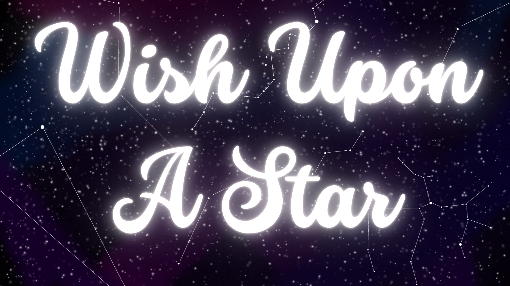
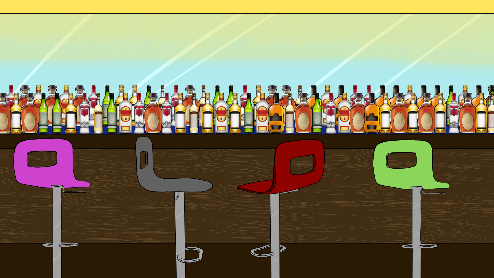
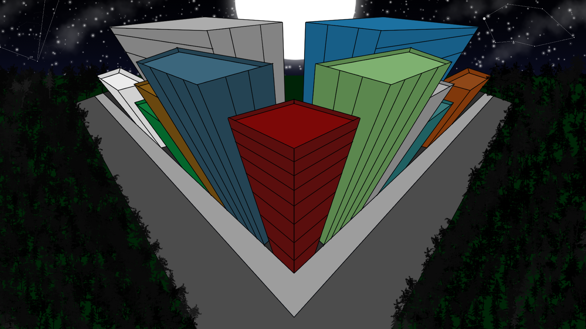
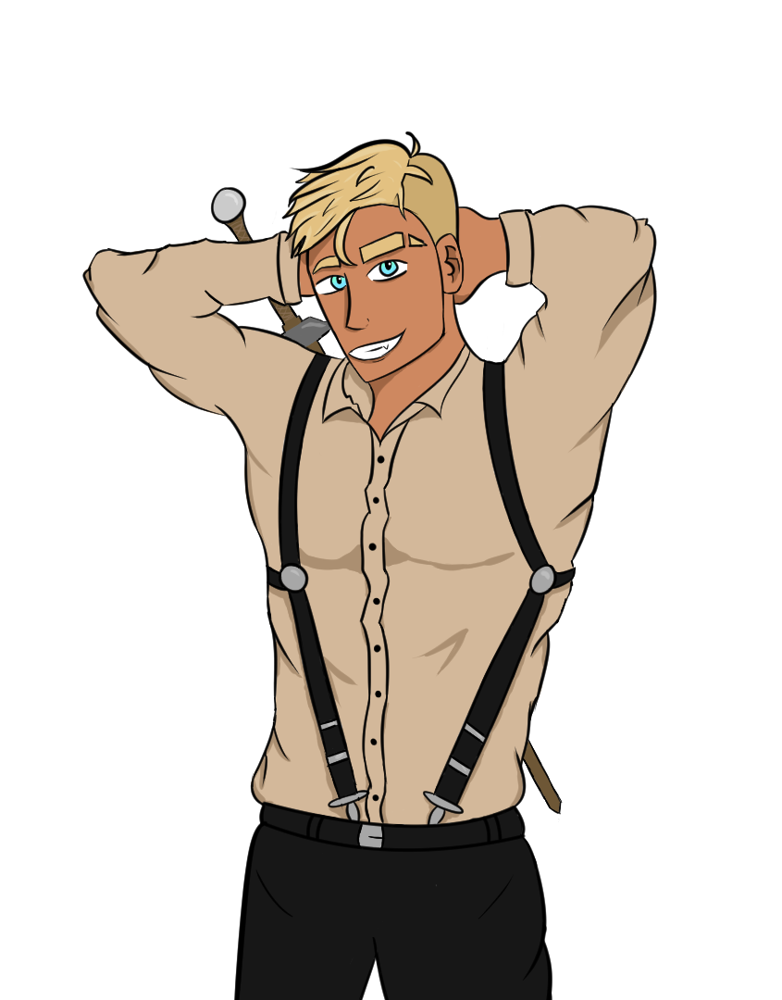
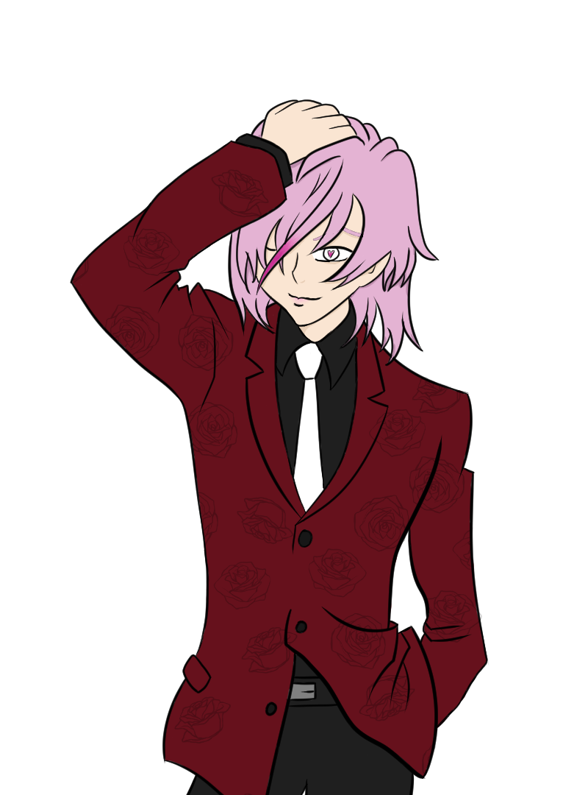
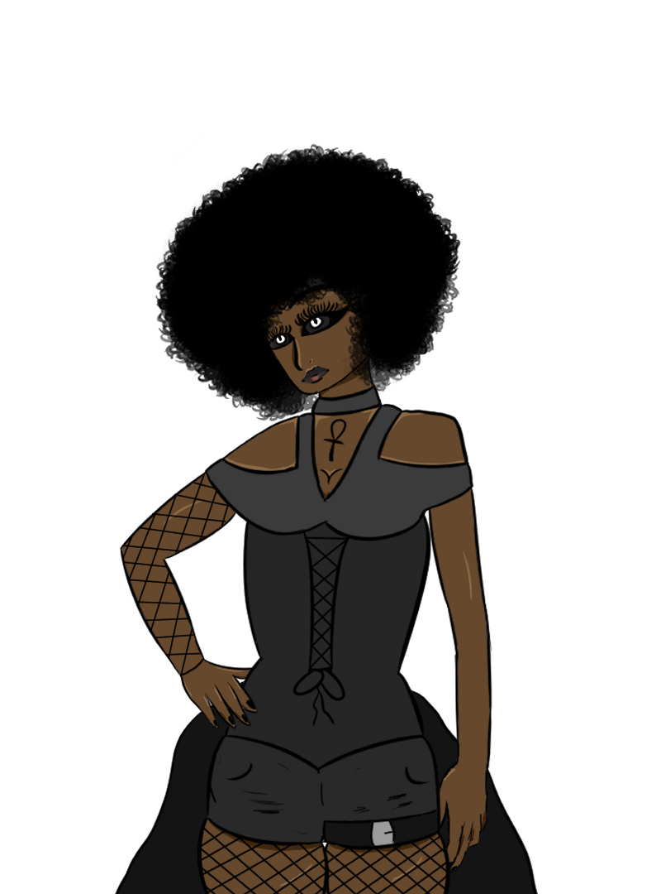
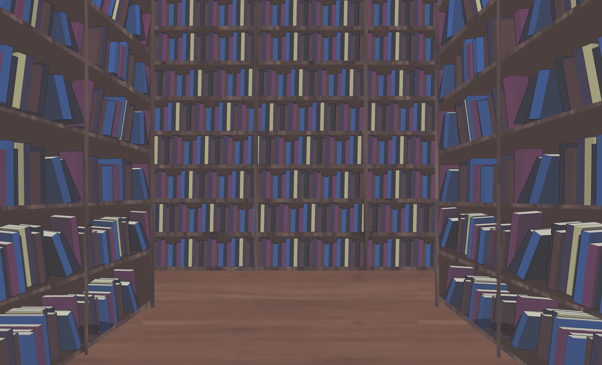

This piece was for my third project in Character Design with Steve Bryant. I drew Husk from Hazbin hotel in a nior/speakeasy type bar, all while adding the four card symbols.
This piece was for my second project in Character Design with Steve Bryant. I drew Alastor from Hazbin hotel, Markiplier, and Sebastion from Black Butler all in my style.


This piece was for my first project in Character Design with Steve Bryant. I drew Gojo from Jujutsu Kaisen. This first project was a turnaround to work on propotions and same posing.
All of the following works are what I created for the 2024 Fall Game Jam with ISU. The title of the game is Wish Upon A Star. My group and I created a dating sim style video game featuring four different characters all from different universes. I created a good amount of the backgrounds as well as one of our four characters.
  


All of the following works are what I created for the 2024 Spring Game Jam with ISU. The game title is Underneath Their Covers. My group and I created a dating sim style video game featuring different characters that are representations of different book genres. I created all of the art for the game.
   